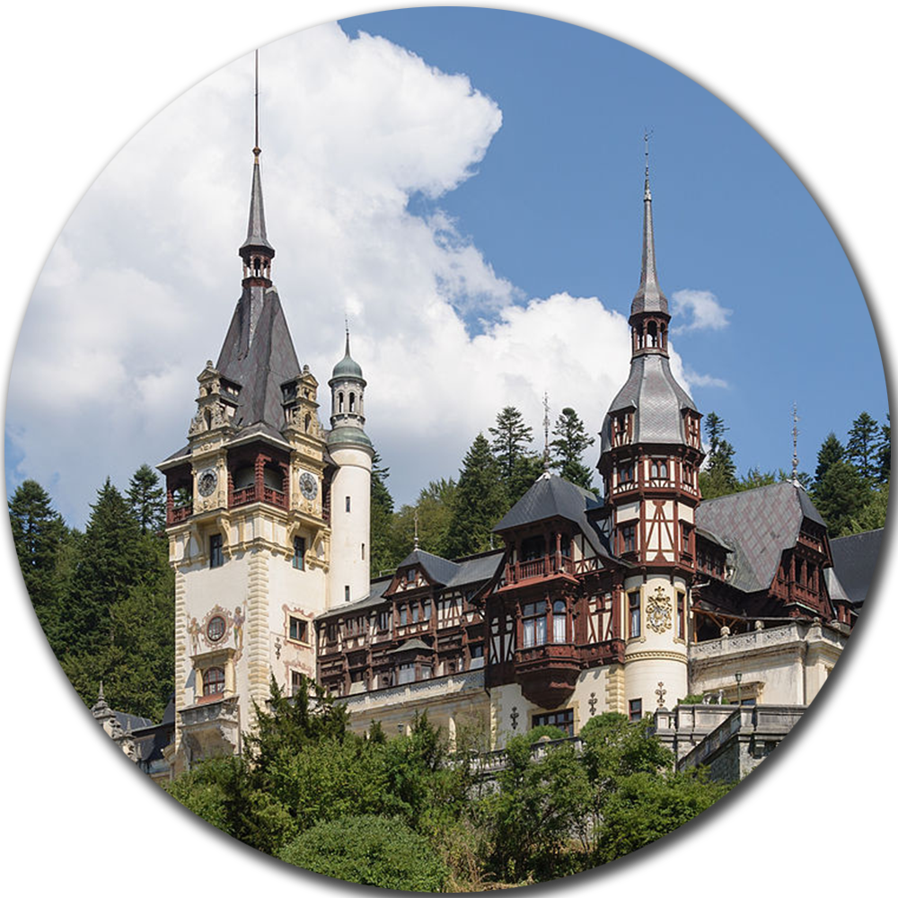
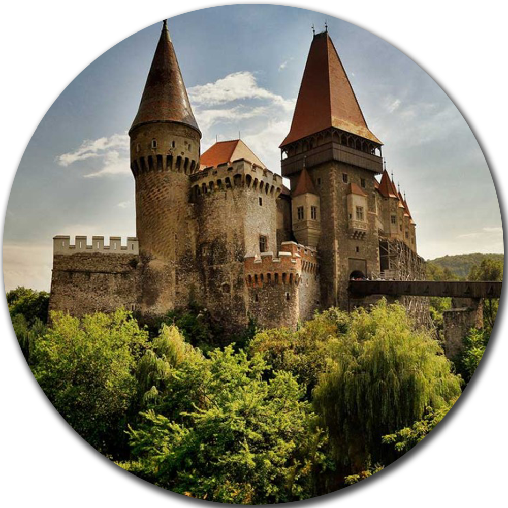
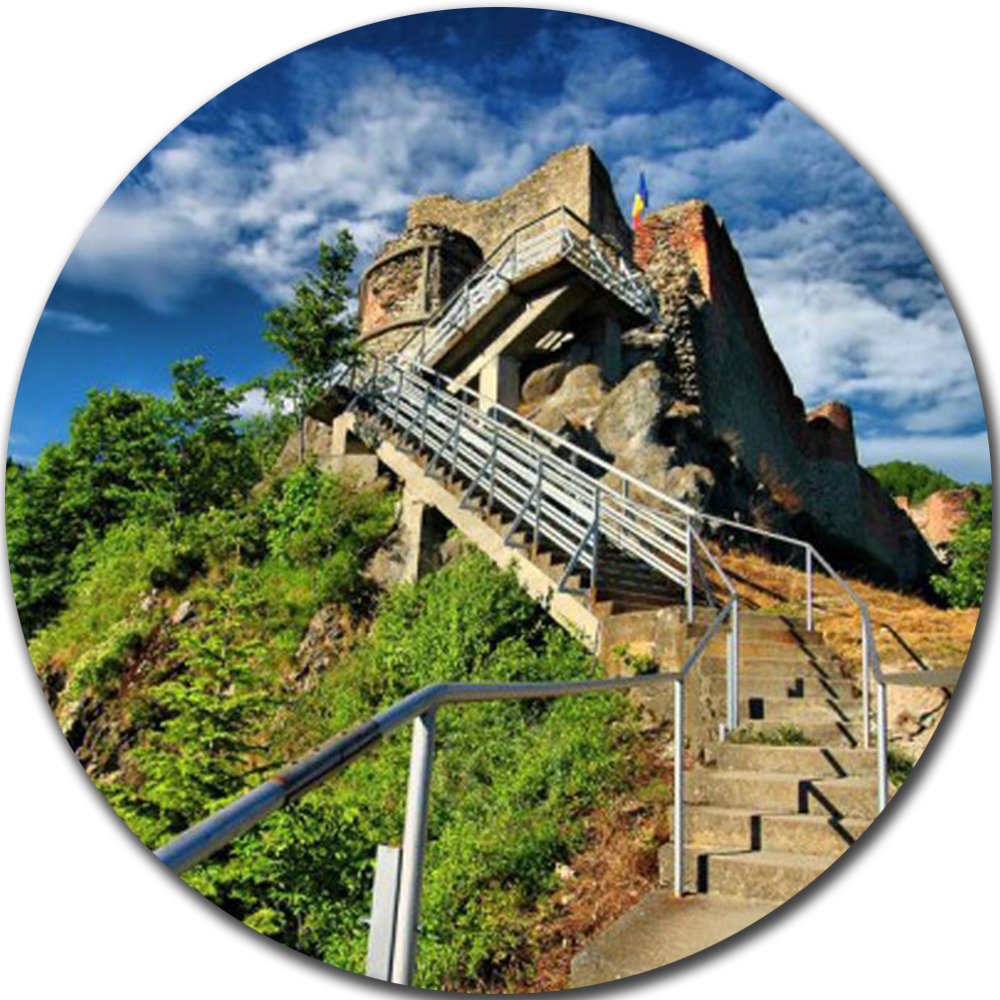
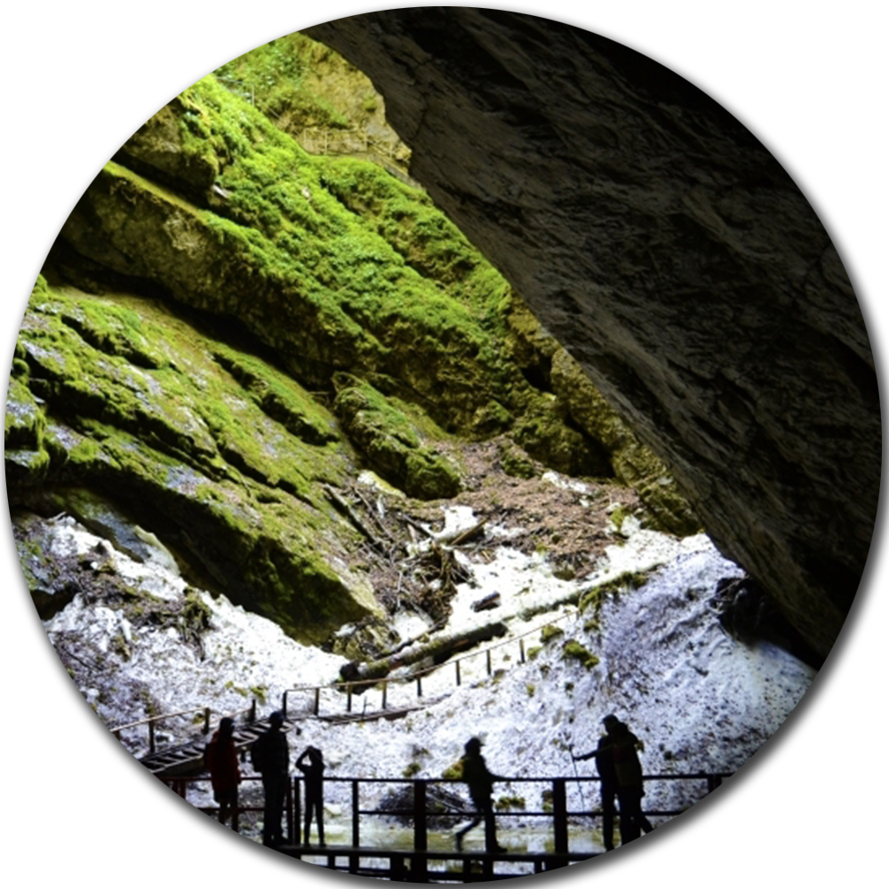
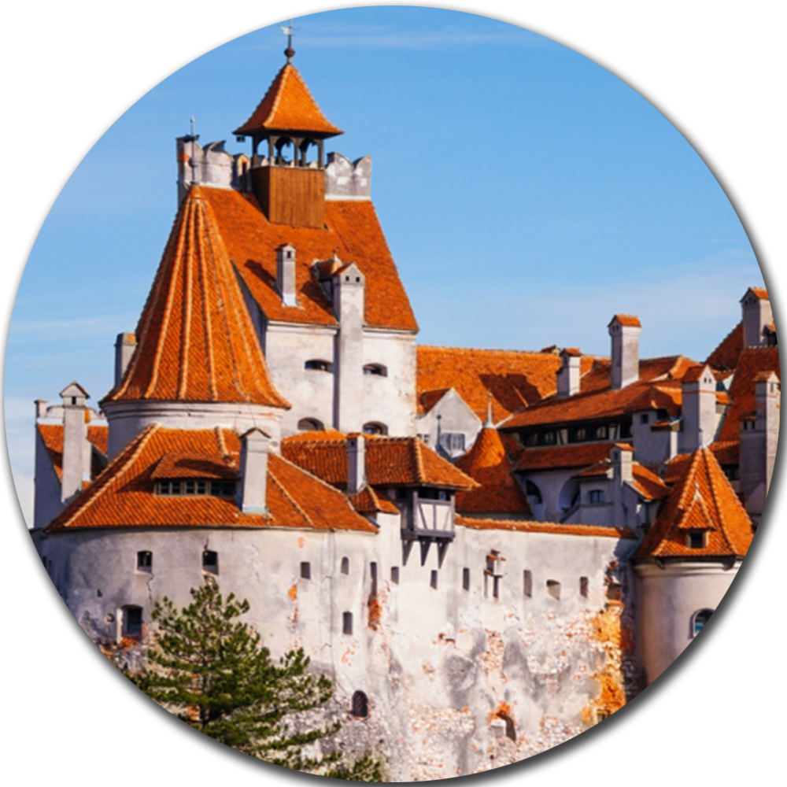

|
-Castelul Peles
Castelul Peleș este un palat din Sinaia, construit între 1873 și 1914. Construită ca reședință de vară a regilor României, clădirea se află, în prezent, în proprietatea Familiei Regale a României și adăpostește Muzeul Național Peleș.
Castelul Peleș este situat în Sinaia, pe Valea Prahovei, (la 44 km de Brașov și la 122 km de București), pe drumul european E60 (DN1). Pe calea ferată există numeroase trenuri care pleacă din Ploiești sau Brașov cu destinația Sinaia.
Aflat în proprietatea privată a Familiei Regale a României încă de la început, Castelul Peleș a fost repede naționalizat după lovitura de stat comunistă de la 30 decembrie 1947 care a dus la abdicarea forțată a Regelui Mihai și la exilul său forțat care a durat 50 de ani.
După Revoluția din decembrie 1989, Castelul Peleș și Pelișorul au fost reintegrate în circuitul turistic. Începând cu anul 1990, și Pelișorul este deschis publicului spre vizitare.
|

|
|
-Castelul Corvinilor
Castelul Hunedoarei, numit și Castelul Corvinilor sau al Huniazilor,[1] este cetatea medievală a Hunedoarei, unul din cele mai importante monumente de arhitectură gotică din România.
Este considerat unul dintre cele mai frumoase castele din lume, fiind situat în „top 10 destinații de basm din Europa”.[2]
Castelul Hunedoarei este cea mai mare construcție medievală cu dublă funcționalitate (civilă și militară) din România aflată încă "în picioare".[3]
Accesul la Castelul Corvinilor se poate realiza pe DN7 (E15) până în dreptul localității Sântuhalm, dinspre est sau vest, iar de acolo urmând DJ 687 până în orașul Hunedoara. Intrarea se face dinspre localitatea Sântuhalm urmând bulevardele Traian, Republicii și Libertății. Vezi harta:[4] Geografic monumentul este situat în centrul județului Hunedoara, în partea sud-vestică a Municipiului Hunedoara, pe ultimele ramificații estice ale munților Poiana Ruscă.
|

|
|
-Cetatea Poenari
Cetatea Poenari este un monument istoric (cod LMI AG-II-a-A-13507) din secolul al XIV-lea aflat în județul Argeș (Căpățânenii Pământeni), Muntenia, România.
Cetatea este situată pe un vârf de munte care domină Cheile Argeșului, lângă localitatea Arefu, la câțiva kilometri de barajul și lacul de la Vidraru, pe vale mai jos, lîngă centrala hidroelectrică Vidraru.
În prezent ruinele cetății sunt amenajate ca obiectiv turistic și sunt vizitate de turiști români și străini.
De la nivelul cetății se pot admira priveliștile frumoase ale văii Argeșului.
Pentru a se urca la cetate s-a construit, în zilele noastre, o scară de beton, dotată cu balustrade, cu 1480 de trepte.
Cetatea Poenari se află pe un vârf de munte, la aproximativ 400 de metri față de nivelul văii. Cetatea are o forma alungită și posedă 5 turnuri, 4 rotunde și unul prismatic. Zidurile au 2-3 metri grosime.
|

|
|
-Pestera Scarisoara
Peștera Scărișoara sau Ghețarul de la Scărișoara adăpostește cel mai mare ghețar subteran din România. De aici îi vine și numele de „ghețar” iar „Scărișoara” provine de la comuna Scărișoara situată 16 km mai jos, de care aparținea administrativ în vremea când a fost numită astfel. Acum aparține comunei Gârda de Sus, județul Alba.
Drumul spre peșteră pornește din comuna Gârda de Sus, situată pe valea Arieșului Mare la 32 km amonte de Câmpeni (pe DN75). Din centrul comunei se desprinde drumul carosabil de pe Gârda Seacă pe care se ajunge, după aproximativ 1 km, la gura Văii Ordâncușa. De aici există trei variante. Prima este poteca turistică marcata cu cruce roșie, care mai întâi trece prin cătrumul Mununa și după un traseu de 10 km, ajunge la Peștera Scărișoara. Cea de a doua variantă este drumul asfaltat de pe valea Ordâncușei, de 23 km. care duce până în cătunul Ghețar. Ultima și cea mai nouă variantă este pe Valea Gârda Seacă. La 2 km de la gura Urdâncușei pornește un drum forestier prin Mununa până la Ghețar lung de 12 km. Peștera este localizată la 46°29′23″N 22°48′35″E
|

|
|
-Castelul Bran
Castelul Bran (în germană Törzburg, în maghiară Törcsvár) este un monument istoric și arhitectonic situat în Pasul Bran-Rucăr, la 30 de kilometri de Brașov.
Castelul Bran se situează la mai puțin de 30 km de Brașov, pe șoseaua ce pornește din vechiul cartier Bartolomeu și leagă Brașovul de Câmpulung. Castelul Bran este construit pe o stâncă, într-un punct cheie din punct de vedere strategic.
În prezent, în muzeul de patru etaje sunt expuse colecții de mobilier, costume, arme și armuri, iar Domeniul Bran cuprinde, de asemenea, Parcul Regal cu cele două lacuri, Casa de ceai, Casa administratorului și Casa Principesa Ileana.
|

|